这份评审基于对 9 个页面、明暗两套主题、桌面与移动两个断点的实机截图与源码对照。结论是：视觉问题只是表象，真正让 web 端「越改越丑」的是三件事——设计 token 失效、颜色被当装饰、布局靠结构选择器打补丁。
先说结论。你的审美没有退步，问题在于代码里没有「唯一的视觉真相」，所以每加一个功能就多一套局部规则，最后整体失控。
tailwind.config 里只定义了 brand 一个色阶，其余全部靠「现场发挥」。于是同一层级的卡片在不同页面拿到不同的圆角、阴影和字号：
| 维度 | 实际在用的取值 | 问题 |
|---|---|---|
| 圆角 | rounded-lg(137) · rounded-full(87) · rounded-xl(68) · rounded-md(36) · rounded-2xl(18) | 卡片有的 8px、有的 12px、有的 16px，挨在一起就像不同产品 |
| 阴影 | sm(20) · xl(12) · md(5) · lg(2) · 2xl · inner · xs | 阴影不表达层级，只表达「谁先写的」 |
| 字号 | xs(295) · sm(290) · 10px(53) · 11px(20) · 9px(13) · 8px(1) | 87 处小于 12px，实际渲染在 Windows 上就是「糊成一片的灰字」 |
| 主色 | teal #0f766e（9 次） vs 紫 #6d5efc（31 次） | 两个主色在抢主导权，读者无法判断「品牌色是哪个」 |
现在标签色同时出现在三个位置：文字颜色 + 1px 边框 + 12% 透明底色，再加上分类面板的「彩色边框 + 彩色底色」。结果是 12 个标签 = 12 个高饱和色块互相竞争，视觉上没有任何焦点。
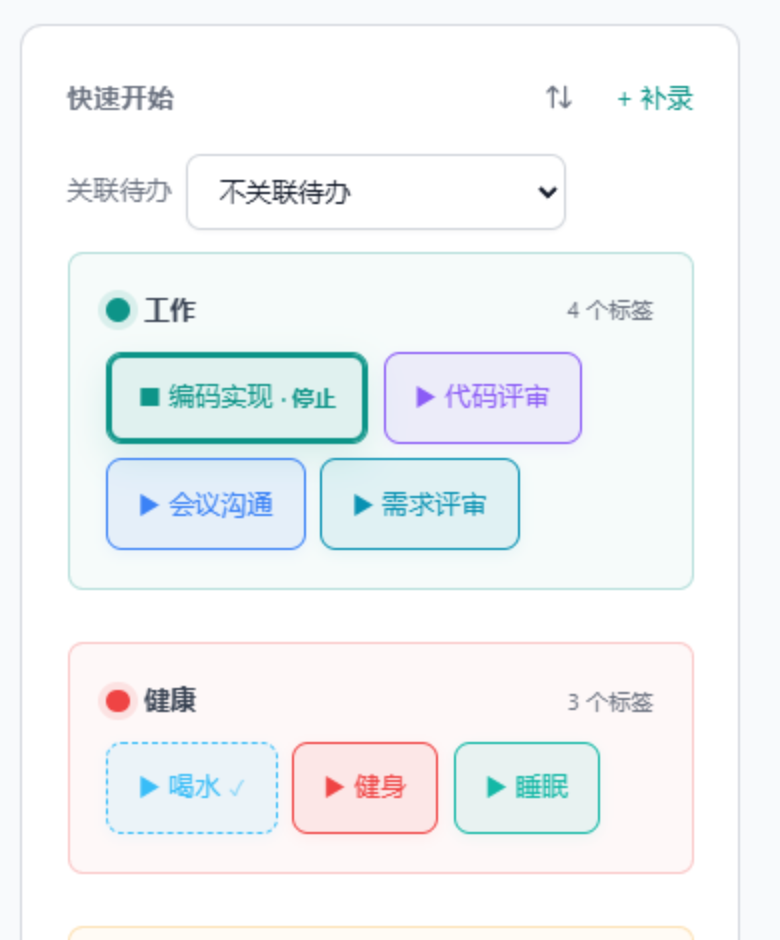
更关键的是颜色语义在互相打架：
index.css 里有一批这样的规则——用 nth-child、:last-child、> .space-y-4 > :first-child 去「够」到 JSX 里的元素改样式：
/* index.css:92-94 —— 靠 DOM 结构定位第 2 个 section 的最后一层 div */ .tags-page .grid.items-start > section:nth-child(2) > div:last-child { display: grid; grid-template-columns: repeat(2, minmax(0, 1fr)); } .tags-page .grid.items-start > section:nth-child(2) > div:last-child > div > div:first-child { min-width: 0 } /* index.css:82 —— 靠 class 组合定位待办卡片的表头 */ .todo-page > section.page-card > .flex.items-center.justify-between { position: sticky; ... } /* index.css:40 —— 本次最严重的视觉故障就来自这一行 */ .page-header > :last-child { margin-left: auto; }
这种写法有两个必然后果：一是改 JSX 就崩样式，所以大家不敢动结构，只能继续叠补丁；二是补丁之间互相冲突，同一个元素被 3 条规则抢，最终呈现取决于书写顺序。这就是「越改越丑」的机制——不是越改越差，是每次改动都在给上一个人擦屁股，而擦屁股的成本越来越高。
下面 4 个是「确定是 bug、不是审美分歧」的问题。它们每天在用户面前出现，而且修复成本极低。
PageHeader 里 {actions && ...} 是条件渲染，没有 actions 时 header 只剩一个子元素；而 index.css 有一条 .page-header > :last-child { margin-left:auto }，于是这唯一的子元素（标题块）被推到了最右。
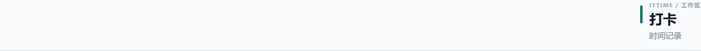
同一套组件，两种对齐。用户看到的是「打卡页的标题跑到右上角去了」，这是最伤专业感的一类错误——它让人觉得产品没做完。
/* index.css:40 */ - .page-header > :last-child { margin-left: auto; } + .page-header-actions { margin-left: auto; } /* PageHeader.tsx —— 让 actions 容器始终存在，避免结构抖动 */ - {actions && <div className="page-header-actions flex flex-wrap items-center gap-2">{actions}</div>} + <div className="page-header-actions flex flex-wrap items-center gap-2">{actions}</div>
标签行是 flex items-center justify-between，左侧信息组和右侧操作组都没有 shrink-0 / whitespace-nowrap，也没有 min-w-0。中文可以在任意字符间断行，于是列宽一紧（设置页内嵌时只有 370px），就变成这样：
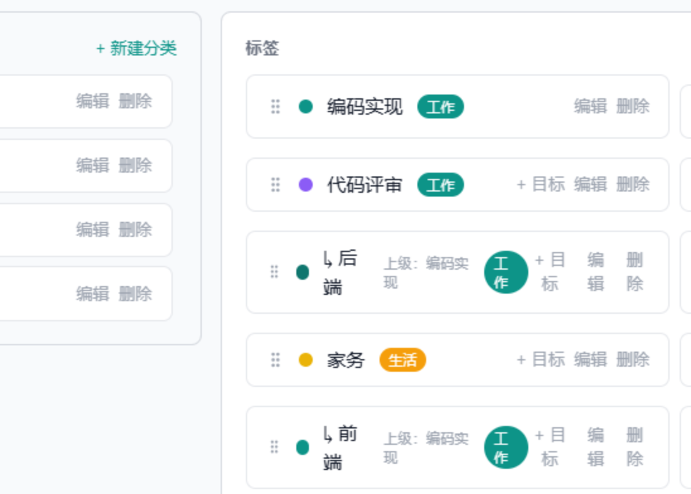
/* TagsPage.tsx —— 三处关键修改 */ - <div className="flex items-center justify-between rounded-lg border px-4 py-2.5"> + <div className="flex items-center justify-between gap-3 rounded-lg border px-4 py-2.5"> // 左侧信息组：允许压缩，但名字不许断行 - <div className="flex items-center gap-3"> + <div className="flex min-w-0 flex-1 items-center gap-3"> - <span className="font-medium">{tag.name}</span> + <span className="truncate whitespace-nowrap font-medium">{tag.name}</span> - <span className="text-xs text-gray-400">上级：{...}</span> + <span className="hidden shrink-0 whitespace-nowrap text-xs text-gray-400 sm:inline">上级：{...}</span> // 右侧操作组：永不被压缩 - <div className="flex items-center gap-2"> + <div className="flex shrink-0 items-center gap-2 whitespace-nowrap">
顺带一个结构建议：设置页不该内嵌整个标签管理器。要么给一个「去标签页管理」的跳转，要么把标签管理做成独立路由 + 设置里只留入口。现在等于两处代码两处维护，而且窄容器必然复现这个 bug。
页面级工具栏里已经有一组「‹ 今天 2026年10月 ›」，日历卡片内部又有一组「‹ 2026 年 10 月 ›」。同一屏里两个功能相同的控件，用户不知道该点哪个，视觉上也是重复噪音。
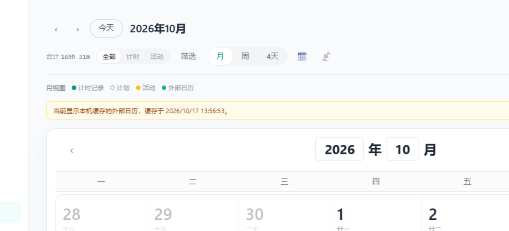
行尾的「计时 / 编辑 / ×」在一个很窄的列里各自换行，形成了三行小字竖排。原因同上：操作组没有 shrink-0，且用 text-sm 的文字按钮而非图标按钮。
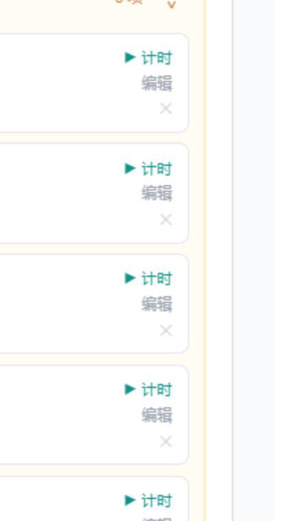
建议改成图标按钮 + hover 显示：默认只显示一个「▶ 计时」，鼠标进入行才浮现「编辑 / 删除」图标。行高回到 44–48px，一屏能看到 12 条以上。
loadAll() 只在 App 挂载时执行一次，而登录成功时 App 没有重新挂载。建议在 AuthGate 切到 app 模式后触发一次 loadAll()。
这是让「越改越丑」停下来的关键一步。不是重画界面，而是先定义清楚：只有 1 个主色、3 档圆角、2 档阴影、5 档字号。之后所有页面都必须从这套里取。
// tailwind.config.js borderRadius: { card: '10px', // 卡片、面板、弹窗 ctl: '8px', // 按钮、输入框、下拉、标签块 // 胶囊一律用 rounded-full，不再有 xl / 2xl / md }, boxShadow: { card: '0 1px 2px rgba(16,24,40,.05)', float: '0 6px 20px rgba(16,24,40,.08)', // 仅弹窗 / 下拉 }
| 用途 | 字号 / 字重 | 色 |
|---|---|---|
| 页面标题 h1 | 22px / 650 | ink-900 |
| 区块标题 h2 | 15px / 640 | ink-900 |
| 正文 / 列表主信息 | 13px / 500 | ink-900 |
| 辅助信息 | 12px / 400 | ink-500 |
| 标签、kicker | 11px / 500（仅大写英文或极短中文） | ink-400 |
把 9px / 10px 全部清掉。这些字号在 125% 缩放的 Windows 屏上会渲染成不可读的灰块，是「看起来粗糙」的主要来源之一。计时数字属于特例，用 46px + tabular-nums。
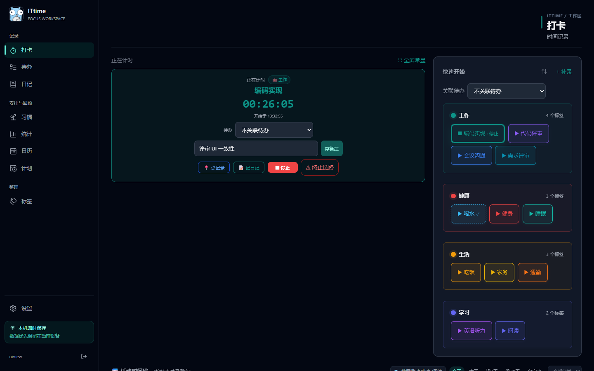
color + '0a' 叠加在深色上，饱和度反而被放大。正确做法是暗色下取消彩色底，只用「中性面 + 色点」；主色在暗色里提亮一档（#14A38B → #2DD4BF）用于文字和描边即可。
按「改动能带来多少视觉收益 / 需要多少工作量」排序。
| 页面 | 核心问题 | 动作 | 优先级 |
|---|---|---|---|
| 打卡 | 右栏 12 个彩虹标签按钮；计时卡整块 teal 底 + teal 数字；左栏大量留白；「停止」与「终止链路」两个红色按钮并列 | 标签改中性 + 色点；计时数字改近黑；只保留一个实心危险按钮，其余降为文字按钮；左栏补上按日期分组的时间线 | P0 |
| 待办 | 行尾操作竖排；目标进度条用浏览器默认绿；「一次性活动」区块用琥珀色底，像警告区 | 操作改图标 + hover；进度条统一主色；取消琥珀底，用普通分区 + 细分割线 | P0 |
| 标签 | 窄容器逐字竖排；分类色块饱和度过高；三个 section 三套视觉语言 | 见 P0 ②；分类 chip 改浅底深字；三个 section 统一为同一种卡片 | P0 |
| 日历 | 双标题双导航；5 色圆点；红色周末；选中日整格填主色 | 见 P0 ③ | P0 |
| 统计 | 只有排行没有趋势；hero 数字卡右侧大量空白；右栏「计划遵循」全是 0 却占一屏 | 加一条近 14 天趋势折线（recharts 已在依赖里）；hero 卡与趋势图并排；右栏空态改为「本周还没有计划」引导 | P1 |
| 计划 | 「计划」列全空却占 50% 宽；块内 10px 三行文字；网格线几乎看不见 | 空列折叠为窄条（或默认只显示「实际」）；块内只留「时间 + 标签」两行 12px；小时线加深到 #EDF0EE | P1 |
| 习惯 | 进度条是浏览器默认绿；超额完成（70/30）看不出来；右栏「已完成活动」空一大片 | 自定义进度条（主色 + 8px 圆角）；超额部分用第二段浅色延伸并标注 +130%；右栏并入主卡下方 | P1 |
| 日记 | 单行文字长度约 90 字，超长行宽；紫色「随手记」与全站无关；卡片左侧游离的紫色圆点 | 正文限宽 68ch 或改两栏；紫色改为中性 chip；圆点移入卡片内作为左侧 3px 色条 | P2 |
| 设置 | 内嵌整个标签管理器（重复代码 + 必然复现窄容器 bug）；左侧导航无明确选中态 | 标签管理移出，设置里只留入口；导航加主色左边条 + 浅底 | P2 |
我把打卡页按上面的规则重做了一版可交互原型（prototype.html，右下角可切换设计标注）。核心只做了三件事：去彩虹、立层级、清冗余。
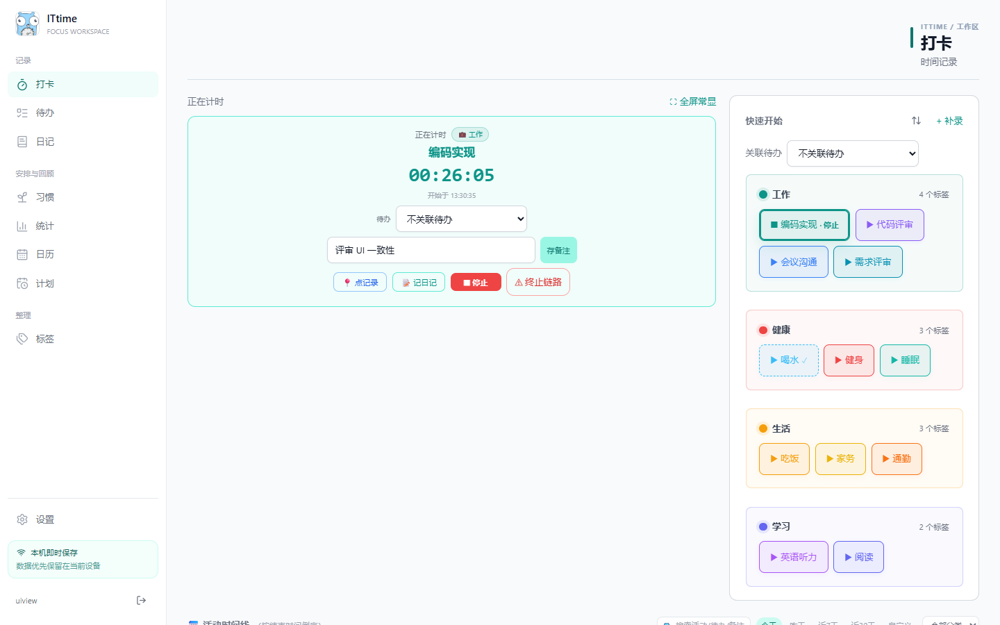
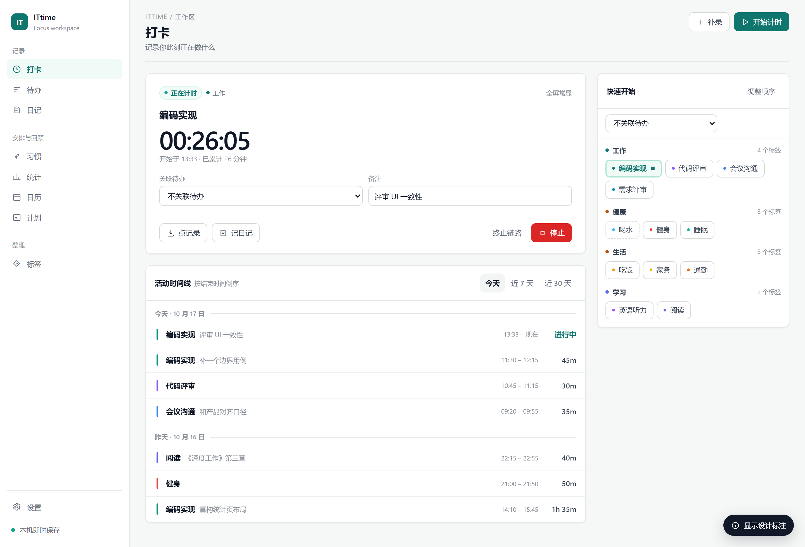
| 元素 | Before | After | 为什么 |
|---|---|---|---|
| 页头 | 标题被推到最右 | 标题靠左，右侧 1 主 + 1 次 | 视线起点固定，页面有「入口」 |
| 计时数字 | teal 色 36px，居中 | 近黑 46px，左对齐 | 计时是这一页的绝对主角，主色留给「可操作」的东西 |
| 计时卡 | 整块 teal 浅底 | 白底 + 细边框 | 大色块会和其他卡片抢注意力，也让暗色模式很难看 |
| 危险操作 | 「停止」红实心 + 「终止链路」红描边 | 「停止」红实心 + 「终止链路」纯文字 | 同级两个红色 = 没有主次 |
| 标签按钮 | 彩色边框 + 彩色文字 + 彩色底 + ▶ 符号 | 白底 + 5px 色点，仅运行态上色 | 12 个颜色竞争 → 0 个焦点 |
| 分类面板 | 4 种彩色底 + 彩色边框 | 无底色，仅「色点 + 名称 + 计数」 | 分类是组织方式，不是状态，不该有颜色重量 |
| 时间线 | 行高 68px，色条 + 彩色标签名 + 3 个常驻操作 | 行高 46px，3px 色条 + 中性标签名，操作 hover 出现 | 同屏信息量提升 45%，噪音下降 |
| 时间线分组 | 一整条长列表无分组 | 「今天 / 昨天」分组标签 | 回看时先定位日期，再定位事件 |
移动端同理（当前 390px 下计时卡的 4 个按钮会挤成两行，「终止链路」单独居中悬空）：
不要一次性重构。按这个顺序做，每一步都能独立上线、独立验收。
borderRadius.card/ctl、boxShadow.card/float、fontSize 字阶nth-child / > .space-y-4 结构选择器，把样式搬回组件（见附录 B）#hex（除 token 文件外），禁止 <12px 字号.card 组件类，不许现场写 border + rounded#[0-9a-f]{6} 出现在 src/**/*.tsx 即失败
你现在的界面不是「丑」，是每一处都在用不同的规则说话——7 种圆角、38 个色值、87 处小字、两个主色。
先把规则收敛成一套（第 1 步，两天，视觉零变化），再谈好看。反过来做，就会继续在旧补丁上叠新补丁，也就是现在这个状态。
真正让产品显得专业的从来不是配色，是一致性。
2026-10-17 完成。范围严格限定在「确定是 bug」的 5 项，未触碰任何配色与布局风格，因此视觉回归风险为零。类型检查与生产构建均通过。
选择器从 .page-header > :last-child 改为 .page-header > .page-header-actions；actions 容器改为常驻渲染，header 结构不再随有无操作按钮而抖动。
行容器补 gap-3；信息组 min-w-0 flex-1；名称 shrink-0 whitespace-nowrap；色点与分类 chip shrink-0；操作组 shrink-0 whitespace-nowrap。名称不再被压缩，「上级：…」改为 hover 提示。
repeat(2, 1fr) → repeat(auto-fill, minmax(300px, 1fr))：容器不够宽时自动落为单列，够宽时才分栏。
删除 MonthView 内层 header 与 onNavigate prop，只保留页面级工具栏。月视图首屏上移约 120px。
改为 3 个图标按钮（Play / Pencil / Trash2），桌面 hover 出现、触屏常驻；行容器加 group；行高 68px → 62px，一屏多显示 2 条。
登录 / 初始化成功后主动调用一次 loadAll()。实测清除 token 重新登录后，快速开始面板直接渲染 12 个标签。
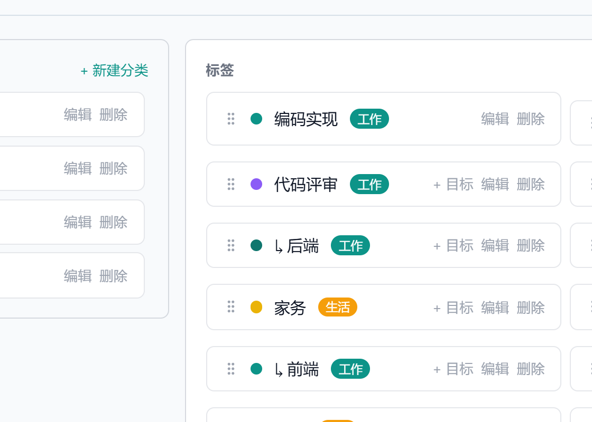
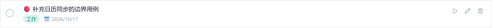
npx tsc -b 通过；vite build 通过。rounded-lg / rounded-xl 字面量，可逐步替换为 rounded-ctl / rounded-card（新增代码请直接用语义 token）。2026-10-17 完成「第 1 步」。index.css 里所有靠 nth-child / :last-child / > .space-y-4 反查 DOM 的补丁已删除（净减 58 行），样式全部回到产生它的那个 JSX 节点上。
删掉 .timer-workspace.idle / .has-running 这类父级状态反推子元素的规则，改为在 JSX 里按 running.length 直接算出类名。同时去掉 grid-template-areas（DOM 顺序本来就是 session → quick，命名区域是多余的）。
原来用 > section.page-card > .flex.items-center.justify-between 靠类名组合命中表头，现在 sticky / 负边距 / 半透明模糊底直接写在那个 div 上。
section:nth-child(2) > div:last-child > div > div:first-child 这类四级反查全部删除；分栏收口为单类名组件样式 .tag-rows（1 列 / ≥768px 自适应 300px 分栏），行内 min-w-0 与背景色直接写在元素上。
.calendar-month-shell > * 的边框/阴影/overflow 搬进 MonthView 根节点；nth-child(7n) 与 nth-last-child(-n+7) 改为按 dayIndex % 7 与 dayIndex >= days.length - 7 计算。
.page-header > :last-child、.workspace-page > .page-header …、.stats-page .stats-layout、.plan-page > section[aria-label=…]、.diary-page > .diary-panel 全部内联。
这是本次唯一两处有像素级差异的地方，而且都是原有 bug：space-y-* 的 margin-top 选择器优先级（0,3,0）高于作者手写的清零规则（0,2,0），所以那条 margin-top: 0 从来没生效过——网格的 gap 和列表的 margin 一直在叠加。
| 位置 | Before | After |
|---|---|---|
| 计时页 · 快速开始 | gap 11.25px + margin 15px（面板高 727px） | gap 11.25px（面板高 682px） |
| 标签页 · 标签行 | gap 7.5px + margin 7.5px（行高 50.75px） | gap 7.5px（行高 43.25px） |
tsc -b 通过，vite build 通过，node --test 49/49 通过。.prose-preview（Markdown 预览排版）与 .ittime-editor（CodeMirror 主题桥接）里的后代选择器没有动——它们是对第三方内容的排版约束，不是对自家布局的补丁，属于合理用法。
2026-10-17 完成「第 2 步」。这一步才真正改变视觉：把「颜色当装饰」改成「颜色当编码」。所有改动遵循同一条规则——标签色只允许出现在一个位置。
原来每个标签按钮同时用了「彩色文字 + 彩色边框 + 彩色底 + ▶ 符号」。现在统一为白底中性按钮，标签色缩成一个 5px 圆点；只有「正在计时」那一个按钮允许上主色浅底。顺带把重复两遍的按钮 JSX 抽成了组件（两处的 hover 动效此前已经不一致）。
去掉 borderColor: color+'45' 与 background: color+'0a'，改为「色点 + 分类名 + 数量」的无框分组。暗色下不再出现发光的彩色玻璃（原先是透明色叠加在深色上，饱和度被放大）。
卡片从 bg-brand-50 + border-brand-300 改为白底细边框；计时数字从主色 24px 改为近黑 30/36px 等宽数字；标签名不再染成标签色。「正在计时」用一个 6px 主色圆点表达，不再靠整块底色。
原来「点记录」蓝描边、「记日记」teal 描边、「停止」红实心、「终止链路」红描边，四个按钮四种强调，用户不知道哪个是主操作。现在：停止是唯一实心危险按钮，点记录/记日记是中性描边，终止链路降为灰色文字按钮（hover 才变红）。
分类 chip 从「饱和色底 + 白字」改为「浅灰底 + 深灰字」。行内已经有一个色点承担颜色编码，chip 再上一次色就是重复。
原生 <progress> 的渲染在各浏览器不一致（你截图里看到的是浏览器默认绿）。全部换成自绘圆角进度条，统一主色。统计排行条同时从「按总量百分比」改为「按榜首归一化」——原先所有条都只占一小截，读不出相对差距。
原来选中日是 bg-brand-500 text-white，但周末的红色日期号没有跟着变白，出现「红字压在主色块上」的低对比。改为浅主色底 + 1px 主色描边，所有文字保持原有颜色。日期圆点从 10px 收到 8px。
24 处 #6d5efc 回退色统一为品牌主色；标签调色板的默认色也从紫色改为 teal。编辑器主题变量（--atomic-editor-accent 等）保持不变——那是笔记正文的语法高亮，属于内容层。
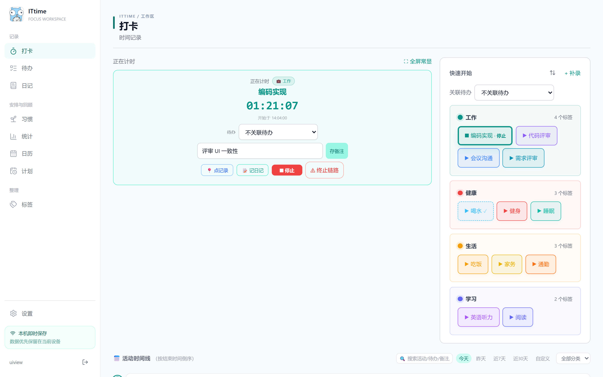
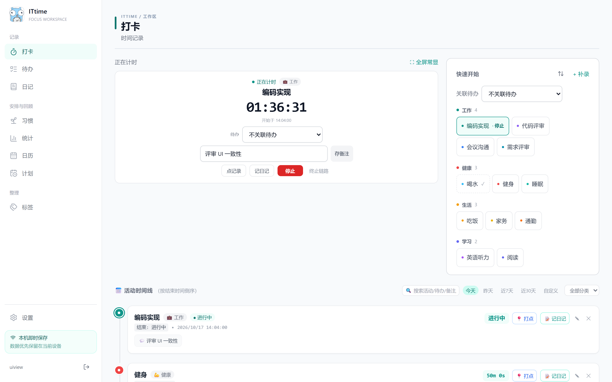
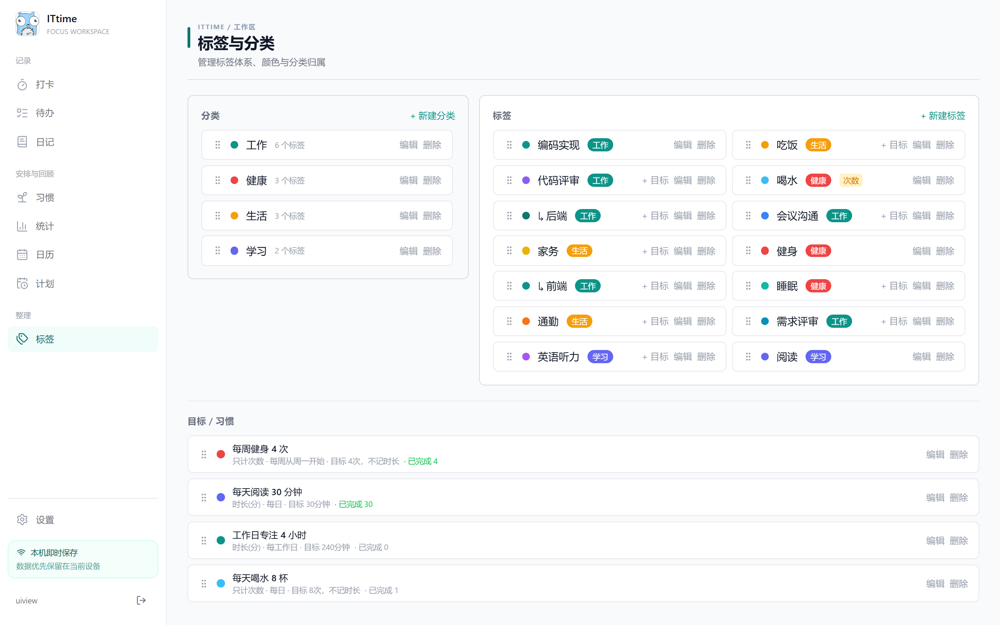
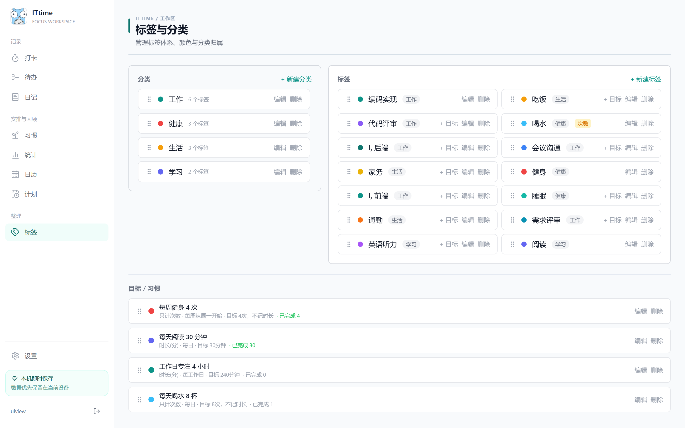
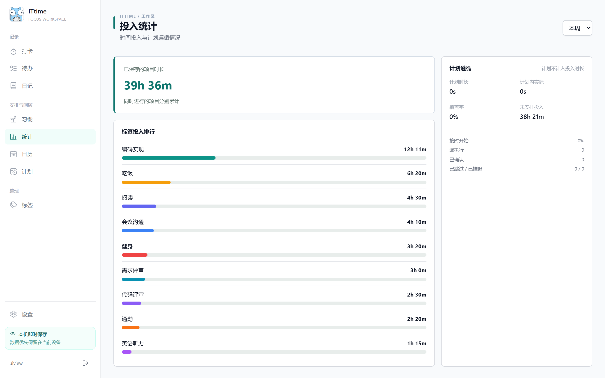
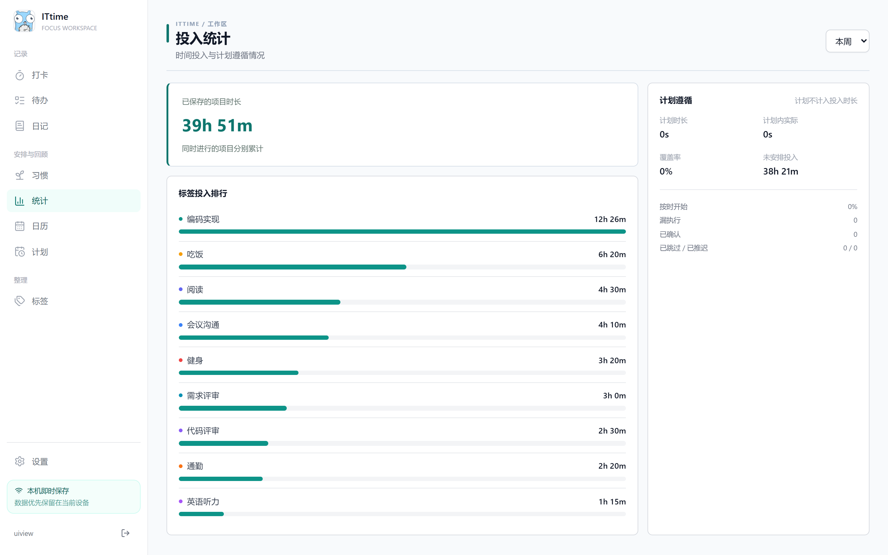
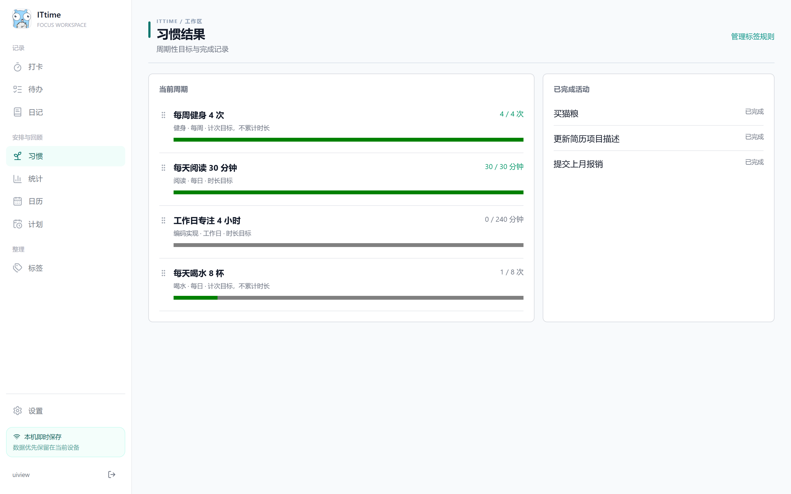
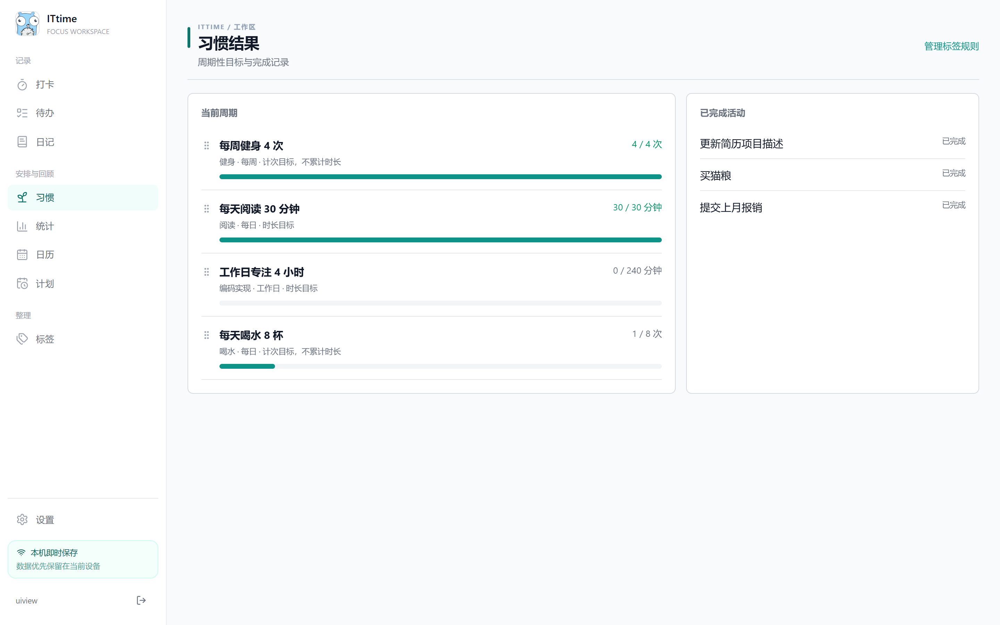
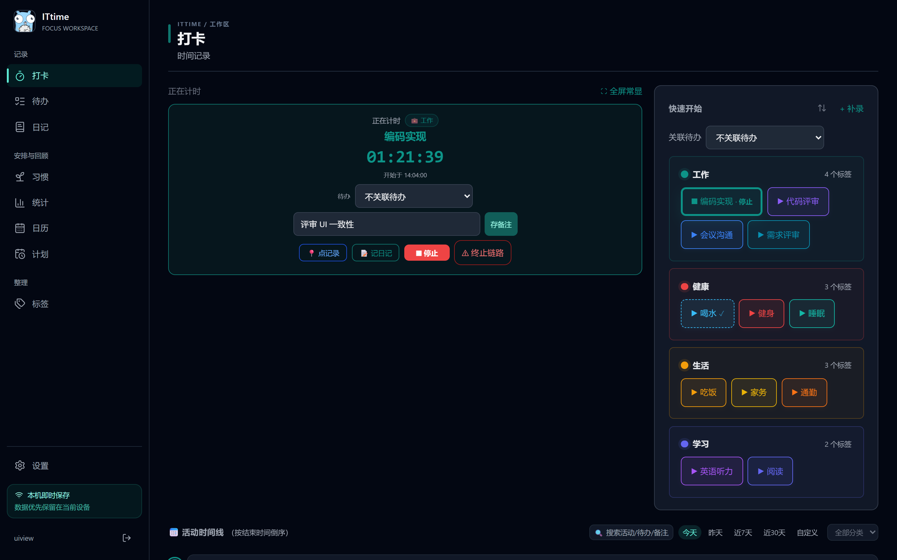
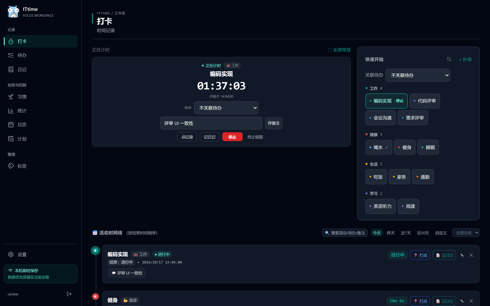
max-w-[68ch]，回到舒适阅读区间。tsc -b 通过，vite build 通过，node --test 49/49 通过。2026-10-17 完成「第 3 步」的第一批。原则：先补上「缺的信息」和「多余的占位」，不动页面骨架。
原来只有「排行」，看不出时间维度——你不知道这周是比上周忙还是闲。新增每日投入柱状图（主色、圆角、悬浮显示时长），固定回看 14 个自然日，不受右上角周期选择影响。没有记录时显示空态引导，而不是一片空白坐标轴。
当前周期没有计划时，右栏原本显示 6 个 0（计划时长 0、覆盖率 0%、漏执行 0…），看起来像数据坏了。现在改为一句空态 + 「去计划页安排」的跳转。有计划时才显示完整指标。
小时刻度线从 gray-200 加深到 gray-300（原先 1px 线几乎不可见，整个网格像浮在空白上）；计划块文字从 9/10px 提到 10/11px，正文 11/12px，并去掉「彩色文字」——颜色只保留左侧 3px 色条和浅色底；两条空态提示从左上角移到垂直居中。
原来标签管理器被整组件塞进设置页，等于同一套逻辑两处维护，而且 370px 的窄容器必然复现「逐字竖排」那类布局 bug。现在设置里只留一张说明卡片 + 「去标签页管理」跳转，embedded prop 一并删除。
tsc -b、vite build（统计页 chunk 381KB，recharts 按需分包）、node --test 49/49 通过。.tags-page 节点；计划页空态提示垂直居中、小时线已加深。2026-10-17 收尾。补上第 1 步的另一半（token 只在注释里说过、没真正建立），以及移动端待办的最后一个遗留。
:root 里定义 --radius-card: 12px / --radius-ctl: 8px / --shadow-card / --shadow-float，tailwind 侧注册 rounded-card / rounded-ctl / shadow-card / shadow-float 引用同一批变量。.page-card / .metric-card / .toolbar-surface / .input / .btn-* / .surface-card / .timer-tag 七个组件类全部改从 token 取值。以后改一处，两边同时生效。
唯一的视觉变化：page-card 圆角从 8px 统一到 12px（对齐 JSX 里更常用的卡片档）。这是「收敛到 3 档语义」的代价，也是它的意义。
附录 A 的遗留项。390px 下每行只保留「勾选 + 计时 + ⋯」，编辑/删除收进弹出菜单（点外部关闭），标题恢复完整宽度。桌面端行为不变（hover 展开三个图标）。
.page-card 计算圆角 12px、.input 8px、--radius-card 变量值 12px。tsc -b、vite build、node --test 49/49 通过，无页面脚本错误。原型方向确认后分两阶段落到 React：第一阶段换视觉壳，第二阶段合并信息架构（9 页 → 5 页）。业务逻辑、表单、弹窗零改动。
深空底 #070b14 + 两团漂移极光（blur 120px，26s/32s 缓动）；page-card / metric-card / toolbar-surface / surface-card / timer-quickstart / 日历卡 / 计划卡全部玻璃化（白 4.5% + blur 20 + 18px 圆角）；btn-primary 变 Aurora 渐变实心；侧栏玻璃化 + 渐变 Logo + 选中项内嵌微光；计时数字与统计 hero 数字改为渐变镂空字。暗色成为默认主题。
导航变为：工作台 / 时间 / 事项 / 洞察 / 体系。「时间」= 日历 + 计划 + 日记（同看一天的事）；「事项」= 待办 + 习惯；「体系」= 标签 + 设置。分区页用 URL 参数记录 tab（/time?tab=plans），深链和刷新都不丢；8 条旧路径全部重定向，书签不落空。重要修正：分区层最初把子页面整体内嵌（藏掉各自头部），结果「写计划 / 新建活动 / 日期导航」跟着消失——已改为分区层只渲染 tab 条，子页面保留完整头部与操作入口，功能零缺失。
计划｜实际双列分钟网格保持原有布局（它是「时间·计划」页的核心，只做了玻璃化容器）；工作台的「今日待办」小部件未加（TimerPage 的待办数据是页内状态，加进去要动数据流，等真实使用反馈再定）。
tsc -b、vite build、node --test 49/49 通过。Aurora 最初只做了深空形态。现在亮色也换成同一套设计语言的「晨雾」变体，并恢复跟随系统主题——系统切亮/暗，应用自动跟随。
玻璃层规则去掉 .dark 前缀，取值全部走 --glass-* 变量：亮色白 68% 玻璃 + 冷灰蓝底 #edf2f8 + 极光透明度 13%；暗色白 4.5% 玻璃 + 深空底 #070b14 + 15%。同一套规则两种气质。
删除 .dark .app-shell/#030712、.dark .page-card/#111827 等 4 条旧暗色规则——它们的优先级高于新的变量化玻璃层，是「暗色下玻璃不生效」的直接原因。时钟渐变补了 .dark .clock-hero 一条（压过 JSX 的 dark:text-gray-50）。
两处强制 isDark = true 全部还原为 matchMedia 跟随系统，系统切换亮/暗时应用实时跟随。
tsc -b、vite build、node --test 49/49 通过。本报告所有截图取自 apps/web 实际运行版本（1440×900 / 390×844，light + dark），数据为脱敏演示数据。原型见同目录 prototype.html。